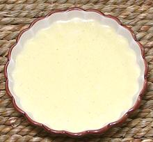

 |
Mojo - Cuban CaliforniaCuba / California - Mojo | ||||
| Makes: Effort: Sched: DoAhead: |
9 oz ** 10 min Yes |
Cuban restaurants in Los Angeles, and probably elsewhere in California, provide this Mojo as a dip and table condiment, and use it as a sauce on fried chicken. See Comments. | |||
|
|
5 1/2 2 1/2 1/3 2/3 |
cl c T c t t |
Garlic Olive Oil, ExtV Vinegar, white Bitter Orange juice (1) Pepper, black Salt |
Make - (10 min)
|